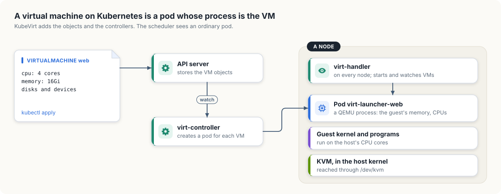
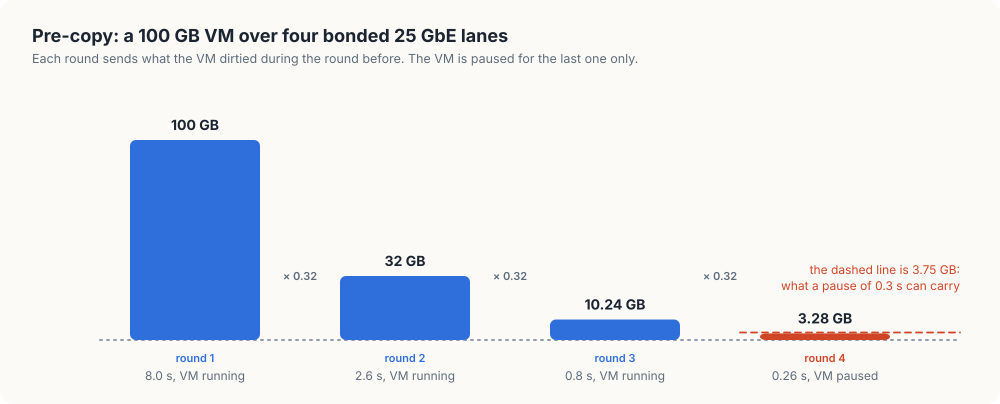

6. Virtual machines on Kubernetes
Every workload so far has run in a container. A container shares the host’s kernel, and some users of a GPU cluster need a kernel of their own: a customer who must run a particular operating system, a tenant who is not trusted to share a kernel with others, or a team with an appliance that ships as a disk image. For them the unit of work is a virtual machine (VM), a complete computer simulated in software, with its own kernel, on a real one.
In this chapter, we will see how a VM runs on a Kubernetes cluster and what that means
for the two things this book cares about: giving the VM a GPU, and moving the VM off a
machine that has to be repaired. The second leads to live migration, moving a running
VM to another host without stopping it. We will reason about when that can work, and
then write migration, in Go and in Rust, a model of the algorithm that we can run with
the memory sizes and link speeds of our own fleet.
This chapter covers
- what a virtual machine is on Linux: a process, with help from the kernel
- KubeVirt, which runs each VM inside a pod
- two ways to give a VM a GPU, and what each costs
- live migration by pre-copy: rounds, dirty memory, and the final pause
- when a migration converges, worked out for the links between our machines
- why a VM that holds a GPU directly has to be stopped to be moved
A virtual machine is a process
On Linux, a VM is an ordinary process on the host. The program is usually QEMU. It allocates a large block of its own memory and presents it to the guest as the guest’s physical memory, and it creates one thread for each of the guest’s CPUs.
Those threads run the guest’s code directly on the host’s CPU cores, at close to full
speed, through a kernel feature called KVM (Kernel-based Virtual Machine). KVM uses
the CPU’s virtualization support to run guest code in a restricted mode, and returns
control to QEMU whenever the guest does something that needs the host’s help, such as
talking to a disk or a network card. A program asks for this by opening the device file
/dev/kvm.
The Orin NX that runs our cluster has it:
$ ls -l /dev/kvm
crw-rw----+ 1 root kvm 10, 232 Nov 21 2023 /dev/kvm
$ zcat /proc/config.gz | grep -E '^CONFIG_(KVM|VFIO)='
CONFIG_KVM=y
CONFIG_VFIO=y
Since a VM is a process, it can run in a container, and so in a pod. That observation is the whole basis for running VMs on Kubernetes.
KubeVirt: a VM inside a pod
KubeVirt is the project that adds virtual machines to Kubernetes. It follows the pattern of section 1.1: it teaches the API server new kinds of object with CustomResourceDefinitions and runs controllers that reconcile them. Figure 6.1 shows the parts.

A user creates a VirtualMachine object, whose spec describes the VM: its CPUs, its
memory, its disks, and its devices. A controller, virt-controller, creates a pod for
it, named virt-launcher followed by the VM’s name. The pod’s resource requests match
the VM’s size, so the scheduler places it exactly as it places any pod, and everything
we have built so far applies: the pod is counted against the node’s capacity, it shows
up in gpuusage from chapter 2 if it holds a GPU, and it is evicted when chapter 4’s
controller drains the node.
On each node runs virt-handler, an agent that plays the kubelet’s part for VMs. When a
launcher pod starts on its node, it has the launcher start a QEMU process inside the
pod’s container. The guest’s memory is that process’s memory, so it counts against the
pod’s memory limit.
The running VM is represented by a second object, the VirtualMachineInstance, whose
status reports the node it is on and the phase it is in. The VirtualMachine object
outlives it, in the way a GpuJob outlived its pod: stopping a VM deletes the instance
and keeps the VirtualMachine.
Giving a VM a GPU
A container reaches a GPU through the host’s driver, as Appendix A showed. A VM has its own kernel and so needs its own driver, which has to talk to a GPU device. There are two ways to give it one.
Passthrough hands a whole physical GPU to one VM. The host detaches the GPU from its own driver and attaches it to a stub driver, VFIO, whose job is to let a process map the device’s registers and receive its interrupts. QEMU presents the device to the guest, and the guest’s NVIDIA driver then operates the real GPU directly. The guest gets the full performance of the card. The host can no longer use it, and can no longer see what it is doing.
A vGPU, which we met in chapter 2, divides one physical GPU among several VMs. The host keeps its own driver, which creates several virtual devices and schedules their work on the real GPU. Each VM is given one virtual device.
| Passthrough | vGPU | |
|---|---|---|
| What the VM holds | one whole physical GPU | a share of a GPU |
| Driver on the host | a stub; the host does not use the GPU | the vendor’s host driver, which schedules the VMs |
| VMs per GPU | one | several |
| Host can read the device’s state | no | yes |
In KubeVirt, the VM’s spec names the device it wants in a gpus list, by the same kind
of resource name a pod uses, and a device plugin on the node advertises the GPUs that
have been set aside for VMs. The scheduler counts them as it counts
nvidia.com/gpu.
The last row of the table decides what the rest of this chapter can do for a VM with a GPU, as we will see once we have built the model.
On our machines. Passthrough with VFIO works on a device that sits on a PCI bus, and
our two boards differ here. The Orin NX’s GPU is part of the system-on-chip and has no
bus address. Its driver is nvgpu, and nvidia-smi shows nothing where the address
would be:
$ nvidia-smi | sed -n 9,10p # on the Orin NX
| 0 Orin (nvgpu) N/A | N/A N/A | N/A |
| N/A N/A N/A N/A / N/A | Not Supported | N/A N/A |
There is no device to detach, so a GPU workload on the Orin runs in a container. The
Thor’s GPU also shares the board’s memory with the CPU, yet it appears on the PCI bus
and runs the same nvidia driver as a discrete card:
$ lspci -nnk -s 01:00.0 # on the Thor
0000:01:00.0 3D controller [0302]: NVIDIA Corporation Device [10de:2b00] (rev a1)
Kernel driver in use: nvidia
Kernel modules: nouveau, nvgpu, nvidia_drm, nvidia
The Thor also has /dev/kvm. We have not tried to pass its GPU to a virtual machine, and
with one GPU on the board, doing so would leave the host with none. The memory sizes and
link speeds of the fleet are what we use in the rest of the chapter.
Moving a running VM
Chapter 4’s controller drains a machine before repairing it. For a container, draining means stopping the process and starting a new one elsewhere. A VM often runs software that expects to stay up for months, and its users did not write it to be restarted. For a VM we would like something better: to move it to another host while it runs.
A VM’s state is its memory, the registers of its CPUs, and the state of its devices. The registers and most device state amount to a few kilobytes. The memory is the problem. A VM sized for a Thor may hold 100 GB, and at the 3.125 GB per second that one 25 GbE lane carries, copying it takes 32 seconds. If the VM were paused for that long, its network connections would time out and its users would see an outage.
So the copy happens while the VM runs, and that creates a second problem: the VM keeps writing to its memory during the copy, and the pages it writes after they were sent are stale on the other side. Memory that has been written since it was last sent is called dirty.
Pre-copy, round by round
The standard algorithm, pre-copy, turns this into a loop.
- Mark all of the VM’s memory as dirty.
- Send every dirty page to the target host, and clear the mark on each page as it is sent. The VM keeps running, and the hypervisor marks each page it writes.
- When the round ends, some pages are dirty again. If they are few enough to send within the pause we are willing to accept, go to step 4. Otherwise go back to step 2.
- Pause the VM, send the remaining dirty pages and the CPU and device state, and resume the VM on the target.
Each round sends less than the one before, provided the VM dirties memory more slowly than the link carries it. Let us work one case by hand. A 100 GB VM dirties 4 GB each second, and the link carries 12.5 GB each second, which is four bonded 25 GbE lanes.
- Round 1 sends 100 GB. That takes 100 / 12.5 = 8 seconds, during which the VM dirties 4 × 8 = 32 GB.
- Round 2 sends 32 GB in 2.56 seconds, during which the VM dirties 10.24 GB.
- Round 3 sends 10.24 GB in 0.82 seconds, during which the VM dirties 3.28 GB.
- 3.28 GB takes 0.26 seconds to send. If we allow a pause of 0.3 seconds, the VM is paused now and the last 3.28 GB are sent.
Each round is smaller than the last by the same factor: the dirty rate divided by the link rate, here 4 / 12.5 = 0.32. Figure 6.2 shows the rounds as bars.

That factor is the whole story of convergence:
- When the VM dirties memory more slowly than the link carries it, the factor is below one, the rounds shrink, and the migration finishes.
- When the VM dirties memory as fast as the link carries it, or faster, the factor is one or more. Every round ends with as much dirty memory as it started with, and the migration does not reach step 4.
A hypervisor has two remedies for the second case. It can slow the guest down, by giving its CPU threads less time to run, which lowers the rate at which they dirty memory. QEMU calls this auto-converge. Or it can switch to post-copy: pause the VM at once, move only the CPU and device state, resume it on the target, and fetch each page from the source at the moment the guest first touches it. Post-copy always finishes, at the price that a network failure during the migration leaves the VM’s memory split between two hosts with no complete copy on either.
Low-level design: migration
| Type | Holds |
|---|---|
VM | a name, the memory size in GB, the rate at which memory is dirtied in GB per second |
Link | a name, and what it carries in GB per second |
| Operation | Does |
|---|---|
Migrate(vm, link, throttle) | runs rounds until the remainder fits in the pause, and prints each round |
| Rule | Value |
|---|---|
| the longest pause | 0.3 seconds, so the last round may send at most 0.3 × the link rate |
| a round makes no progress | when the memory dirtied during it is at least the memory it sent |
| throttling | each round with no progress slows the guest by a further 20 percent, up to 80 percent |
Building migration
The VM and the link
The model needs three numbers: the VM’s memory, the rate at which the VM dirties it, and the rate of the link. Link speeds are quoted in gigabits per second and memory in gigabytes, so each link is entered in gigabytes per second: 25 GbE is 25 / 8 = 3.125.
Listing 6.1 The VM, the link, and the limits, in Go. code/go/migration/main.go
// VM describes the virtual machine being moved.
type VM struct {
// Name labels the VM in the output.
Name string
// MemoryGB is the size of the VM's memory.
MemoryGB float64
// DirtyGBps is how much memory the VM's programs change each second.
DirtyGBps float64
}
// Link is the network path between the two hosts.
type Link struct {
// Name labels the link in the output.
Name string
// GBps is what the link carries, in gigabytes per second. A link of
// 8 gigabits per second carries 1 gigabyte per second.
GBps float64
}
// Limits of the algorithm.
const (
// maxPauseSeconds is the longest the VM may be paused for the last round.
maxPauseSeconds = 0.3
// maxRounds ends a migration that keeps making progress too slowly.
maxRounds = 30
// throttleStep is how much more the guest is slowed each time a round
// fails to shrink the remaining memory, as a fraction of full speed.
throttleStep = 0.2
// maxThrottle is the most the guest may be slowed.
maxThrottle = 0.8
)
Listing 6.2 The VM, the link, and the limits, in Rust. code/rust/migration/src/main.rs
/// The virtual machine being moved.
struct Vm {
/// Labels the VM in the output.
name: &'static str,
/// The size of the VM's memory.
memory_gb: f64,
/// How much memory the VM's programs change each second.
dirty_gbps: f64,
}
/// The network path between the two hosts.
struct Link {
/// Labels the link in the output.
name: &'static str,
/// What the link carries, in gigabytes per second. A link of 8 gigabits
/// per second carries 1 gigabyte per second.
gbps: f64,
}
/// The longest the VM may be paused for the last round, in seconds.
const MAX_PAUSE_SECONDS: f64 = 0.3;
/// Ends a migration that keeps making progress too slowly.
const MAX_ROUNDS: u32 = 30;
/// How much more the guest is slowed each time a round fails to shrink the
/// remaining memory, as a fraction of full speed.
const THROTTLE_STEP: f64 = 0.2;
/// The most the guest may be slowed.
const MAX_THROTTLE: f64 = 0.8;One migration
Migrate keeps one quantity between rounds: remaining, the memory still to be sent.
It starts as the whole memory. Each pass of the loop first asks whether remaining can
be sent within the pause, and if so pauses the VM and finishes. Otherwise it computes
how long the round takes and how much memory the guest dirties in that time. The dirtied
amount is capped at the VM’s size, since a page that is written twice is still one
dirty page.
Listing 6.3 The pre-copy loop, in Go. code/go/migration/main.go
// Migrate runs pre-copy rounds until the remaining memory can be sent within
// the allowed pause, and prints each round. With throttle set, it slows the
// guest whenever a round leaves as much memory to send as it started with.
func Migrate(vm VM, link Link, throttle bool) {
fmt.Printf("%s over %s", vm.Name, link.Name)
if throttle {
fmt.Print(", with throttling")
}
fmt.Println(":")
remaining := vm.MemoryGB // memory still to be sent
slowed := 0.0 // fraction by which the guest is slowed
elapsed := 0.0
for round := 1; round <= maxRounds; round++ {
if remaining <= link.GBps*maxPauseSeconds {
pause := remaining / link.GBps
fmt.Printf(" round %2d: VM paused, %.2f GB sent in %.2f s\n", round, remaining, pause)
fmt.Printf(" done in %.1f s; the VM was paused for %.0f ms\n", elapsed+pause, pause*1000)
return
}
seconds := remaining / link.GBps
dirtied := min(vm.DirtyGBps*(1-slowed)*seconds, vm.MemoryGB)
fmt.Printf(" round %2d: %6.2f GB sent in %6.1f s, %6.2f GB changed meanwhile\n",
round, remaining, seconds, dirtied)
elapsed += seconds
if dirtied >= remaining {
if !throttle || slowed >= maxThrottle {
fmt.Println(" does not converge: memory changes as fast as the link carries it")
return
}
slowed += throttleStep
fmt.Printf(" no progress: guest slowed to %.0f%% of full speed\n", (1-slowed)*100)
}
remaining = dirtied
}
fmt.Printf(" gave up after %d rounds\n", maxRounds)
}
Listing 6.4 The pre-copy loop, in Rust. code/rust/migration/src/main.rs
/// Runs pre-copy rounds until the remaining memory can be sent within the
/// allowed pause, and prints each round. With `throttle` set, it slows the
/// guest whenever a round leaves as much memory to send as it started with.
fn migrate(vm: &Vm, link: &Link, throttle: bool) {
let suffix = if throttle { ", with throttling" } else { "" };
println!("{} over {}{suffix}:", vm.name, link.name);
let mut remaining = vm.memory_gb; // memory still to be sent
let mut slowed = 0.0; // fraction by which the guest is slowed
let mut elapsed = 0.0;
for round in 1..=MAX_ROUNDS {
if remaining <= link.gbps * MAX_PAUSE_SECONDS {
let pause = remaining / link.gbps;
println!(" round {round:2}: VM paused, {remaining:.2} GB sent in {pause:.2} s");
println!(
" done in {:.1} s; the VM was paused for {:.0} ms",
elapsed + pause,
pause * 1000.0
);
return;
}
let seconds = remaining / link.gbps;
let dirtied = (vm.dirty_gbps * (1.0 - slowed) * seconds).min(vm.memory_gb);
println!(
" round {round:2}: {remaining:6.2} GB sent in {seconds:6.1} s, {dirtied:6.2} GB changed meanwhile"
);
elapsed += seconds;
if dirtied >= remaining {
if !throttle || slowed >= MAX_THROTTLE {
println!(" does not converge: memory changes as fast as the link carries it");
return;
}
slowed += THROTTLE_STEP;
println!(
" no progress: guest slowed to {:.0}% of full speed",
(1.0 - slowed) * 100.0
);
}
remaining = dirtied;
}
println!(" gave up after {MAX_ROUNDS} rounds");
}A round that dirties at least as much as it sent has made no progress. Without throttling the function reports that the migration does not converge. With throttling it slows the guest by another 20 percent and tries again.
The run
The run uses two VMs and the four links our fleet has: the Orin NX’s 1 GbE, one of a Thor’s 25 GbE lanes, all four lanes bonded together, and the 200 GbE cable between the two Sparks.
Listing 6.5 The VMs, the links, and the six migrations, in Go. code/go/migration/main.go
func main() {
// An inference VM sized for the Orin NX, and a training VM sized for a
// Thor or a Spark.
inference := VM{"16 GB inference VM (0.2 GB/s changed)", 16, 0.2}
training := VM{"100 GB training VM (4 GB/s changed)", 100, 4}
// The links in the fleet, in gigabytes per second.
orin := Link{"1 GbE", 0.125}
lane := Link{"one 25 GbE lane", 3.125}
bonded := Link{"four bonded 25 GbE lanes", 12.5}
spark := Link{"the Sparks' 200 GbE cable", 25}
Migrate(inference, orin, false)
Migrate(inference, lane, false)
Migrate(training, lane, false)
Migrate(training, lane, true)
Migrate(training, bonded, false)
Migrate(training, spark, false)
}
Listing 6.6 The VMs, the links, and the six migrations, in Rust. code/rust/migration/src/main.rs
fn main() {
// An inference VM sized for the Orin NX, and a training VM sized for a
// Thor or a Spark.
let inference = Vm {
name: "16 GB inference VM (0.2 GB/s changed)",
memory_gb: 16.0,
dirty_gbps: 0.2,
};
let training = Vm {
name: "100 GB training VM (4 GB/s changed)",
memory_gb: 100.0,
dirty_gbps: 4.0,
};
// The links in the fleet, in gigabytes per second.
let orin = Link {
name: "1 GbE",
gbps: 0.125,
};
let lane = Link {
name: "one 25 GbE lane",
gbps: 3.125,
};
let bonded = Link {
name: "four bonded 25 GbE lanes",
gbps: 12.5,
};
let spark = Link {
name: "the Sparks' 200 GbE cable",
gbps: 25.0,
};
migrate(&inference, &orin, false);
migrate(&inference, &lane, false);
migrate(&training, &lane, false);
migrate(&training, &lane, true);
migrate(&training, &bonded, false);
migrate(&training, &spark, false);
}$ go run ./migration
16 GB inference VM (0.2 GB/s changed) over 1 GbE:
round 1: 16.00 GB sent in 128.0 s, 16.00 GB changed meanwhile
does not converge: memory changes as fast as the link carries it
16 GB inference VM (0.2 GB/s changed) over one 25 GbE lane:
round 1: 16.00 GB sent in 5.1 s, 1.02 GB changed meanwhile
round 2: 1.02 GB sent in 0.3 s, 0.07 GB changed meanwhile
round 3: VM paused, 0.07 GB sent in 0.02 s
done in 5.5 s; the VM was paused for 21 ms
100 GB training VM (4 GB/s changed) over one 25 GbE lane:
round 1: 100.00 GB sent in 32.0 s, 100.00 GB changed meanwhile
does not converge: memory changes as fast as the link carries it
100 GB training VM (4 GB/s changed) over one 25 GbE lane, with throttling:
round 1: 100.00 GB sent in 32.0 s, 100.00 GB changed meanwhile
no progress: guest slowed to 80% of full speed
round 2: 100.00 GB sent in 32.0 s, 100.00 GB changed meanwhile
no progress: guest slowed to 60% of full speed
round 3: 100.00 GB sent in 32.0 s, 76.80 GB changed meanwhile
round 4: 76.80 GB sent in 24.6 s, 58.98 GB changed meanwhile
round 5: 58.98 GB sent in 18.9 s, 45.30 GB changed meanwhile
round 6: 45.30 GB sent in 14.5 s, 34.79 GB changed meanwhile
round 7: 34.79 GB sent in 11.1 s, 26.72 GB changed meanwhile
round 8: 26.72 GB sent in 8.5 s, 20.52 GB changed meanwhile
round 9: 20.52 GB sent in 6.6 s, 15.76 GB changed meanwhile
round 10: 15.76 GB sent in 5.0 s, 12.10 GB changed meanwhile
round 11: 12.10 GB sent in 3.9 s, 9.30 GB changed meanwhile
round 12: 9.30 GB sent in 3.0 s, 7.14 GB changed meanwhile
round 13: 7.14 GB sent in 2.3 s, 5.48 GB changed meanwhile
round 14: 5.48 GB sent in 1.8 s, 4.21 GB changed meanwhile
round 15: 4.21 GB sent in 1.3 s, 3.23 GB changed meanwhile
round 16: 3.23 GB sent in 1.0 s, 2.48 GB changed meanwhile
round 17: 2.48 GB sent in 0.8 s, 1.91 GB changed meanwhile
round 18: 1.91 GB sent in 0.6 s, 1.46 GB changed meanwhile
round 19: 1.46 GB sent in 0.5 s, 1.12 GB changed meanwhile
round 20: 1.12 GB sent in 0.4 s, 0.86 GB changed meanwhile
round 21: VM paused, 0.86 GB sent in 0.28 s
done in 201.0 s; the VM was paused for 276 ms
100 GB training VM (4 GB/s changed) over four bonded 25 GbE lanes:
round 1: 100.00 GB sent in 8.0 s, 32.00 GB changed meanwhile
round 2: 32.00 GB sent in 2.6 s, 10.24 GB changed meanwhile
round 3: 10.24 GB sent in 0.8 s, 3.28 GB changed meanwhile
round 4: VM paused, 3.28 GB sent in 0.26 s
done in 11.6 s; the VM was paused for 262 ms
100 GB training VM (4 GB/s changed) over the Sparks' 200 GbE cable:
round 1: 100.00 GB sent in 4.0 s, 16.00 GB changed meanwhile
round 2: 16.00 GB sent in 0.6 s, 2.56 GB changed meanwhile
round 3: VM paused, 2.56 GB sent in 0.10 s
done in 4.7 s; the VM was paused for 102 ms
The inference VM dirties 0.2 GB per second. The Orin NX’s 1 GbE link carries 0.125 GB per second, which is less, so after 128 seconds of copying all 16 GB are dirty again. Over one 25 GbE lane the same VM moves in 5.5 seconds with a pause of 21 milliseconds. The VM is the same in both runs. The link decides the outcome.
The training VM dirties 4 GB per second, which is more than one 25 GbE lane carries, so that migration does not converge either. With throttling, the first two rounds make no progress and the guest is slowed twice, to 60 percent of full speed. At that speed it dirties 2.4 GB per second, the factor becomes 2.4 / 3.125 = 0.768, and the rounds shrink, slowly: the migration takes 21 rounds and 201 seconds, and the training job runs at reduced speed for most of that time.
Over the four bonded lanes the factor is 0.32 and the migration takes 11.6 seconds. Over the Sparks’ cable it is 0.16 and the migration takes 4.7 seconds, with a pause of 102 milliseconds against 262.
Animation 6.1 plays three of these migrations for the training VM, with the memory still to send beside the memory that changes during the round.
This is the reason clusters that migrate large VMs give migration a fast network of its own. The memory size sets how long the first round takes. The ratio of dirty rate to link rate sets whether there is a last round at all.
Migration in KubeVirt
KubeVirt runs this algorithm through objects. A VirtualMachineInstanceMigration names a running instance. A controller creates a second launcher pod on another node, the two QEMU processes connect to each other, and the source sends its memory in rounds. When the migration completes, the instance’s status names the new node and the old pod is removed.
A VM’s spec can set evictionStrategy: LiveMigrate. An eviction of the launcher pod,
the request chapter 4’s drain sends for every pod on a node, then starts a migration and
is refused until the VM has moved. This is how the two chapters meet: the remediation
controller drains with the Eviction API and needs no knowledge of VMs, and each VM
leaves in the way its owner chose.
The VM that cannot move
Step 4 of pre-copy sends “the CPU and device state”. For a virtual disk or a virtual network card, the hypervisor implements the device, so it has that state in its own memory and can send it.
A GPU given to the VM by passthrough is different. The device’s state, including everything in the GPU’s memory, is inside the physical card on the source host, and the host gave up its driver for that card when it attached the stub. The hypervisor has nothing to read and nothing to send, and the target host’s GPU is a different physical device. KubeVirt therefore marks a VM with a passed-through device as not migratable. Draining its node means shutting the VM down and starting it again elsewhere, and the checkpointing discipline of chapter 4 applies to the jobs inside it.
With a vGPU, the host’s driver holds the device’s state and can save and restore it, so migration is possible when the host driver and the hypervisor both support it. That support depends on the driver and hypervisor versions, and has to be checked for each combination.
The complete program
Listing 6.7 The complete program in Go. code/go/migration/main.go
// Command migration models the live migration of a virtual machine: moving a
// running VM's memory from one host to another while the VM keeps running.
//
// The model is the pre-copy algorithm. Each round sends the memory that
// changed during the round before it. The VM is paused only for the last
// round, when what remains is small enough to send within the allowed pause.
// The program runs the algorithm for VMs of two sizes over the links in our
// fleet and prints each round.
//
// Run it from code/go with:
//
// go run ./migration
package main
import "fmt"
// VM describes the virtual machine being moved.
type VM struct {
// Name labels the VM in the output.
Name string
// MemoryGB is the size of the VM's memory.
MemoryGB float64
// DirtyGBps is how much memory the VM's programs change each second.
DirtyGBps float64
}
// Link is the network path between the two hosts.
type Link struct {
// Name labels the link in the output.
Name string
// GBps is what the link carries, in gigabytes per second. A link of
// 8 gigabits per second carries 1 gigabyte per second.
GBps float64
}
// Limits of the algorithm.
const (
// maxPauseSeconds is the longest the VM may be paused for the last round.
maxPauseSeconds = 0.3
// maxRounds ends a migration that keeps making progress too slowly.
maxRounds = 30
// throttleStep is how much more the guest is slowed each time a round
// fails to shrink the remaining memory, as a fraction of full speed.
throttleStep = 0.2
// maxThrottle is the most the guest may be slowed.
maxThrottle = 0.8
)
// Migrate runs pre-copy rounds until the remaining memory can be sent within
// the allowed pause, and prints each round. With throttle set, it slows the
// guest whenever a round leaves as much memory to send as it started with.
func Migrate(vm VM, link Link, throttle bool) {
fmt.Printf("%s over %s", vm.Name, link.Name)
if throttle {
fmt.Print(", with throttling")
}
fmt.Println(":")
remaining := vm.MemoryGB // memory still to be sent
slowed := 0.0 // fraction by which the guest is slowed
elapsed := 0.0
for round := 1; round <= maxRounds; round++ {
if remaining <= link.GBps*maxPauseSeconds {
pause := remaining / link.GBps
fmt.Printf(" round %2d: VM paused, %.2f GB sent in %.2f s\n", round, remaining, pause)
fmt.Printf(" done in %.1f s; the VM was paused for %.0f ms\n", elapsed+pause, pause*1000)
return
}
seconds := remaining / link.GBps
dirtied := min(vm.DirtyGBps*(1-slowed)*seconds, vm.MemoryGB)
fmt.Printf(" round %2d: %6.2f GB sent in %6.1f s, %6.2f GB changed meanwhile\n",
round, remaining, seconds, dirtied)
elapsed += seconds
if dirtied >= remaining {
if !throttle || slowed >= maxThrottle {
fmt.Println(" does not converge: memory changes as fast as the link carries it")
return
}
slowed += throttleStep
fmt.Printf(" no progress: guest slowed to %.0f%% of full speed\n", (1-slowed)*100)
}
remaining = dirtied
}
fmt.Printf(" gave up after %d rounds\n", maxRounds)
}
func main() {
// An inference VM sized for the Orin NX, and a training VM sized for a
// Thor or a Spark.
inference := VM{"16 GB inference VM (0.2 GB/s changed)", 16, 0.2}
training := VM{"100 GB training VM (4 GB/s changed)", 100, 4}
// The links in the fleet, in gigabytes per second.
orin := Link{"1 GbE", 0.125}
lane := Link{"one 25 GbE lane", 3.125}
bonded := Link{"four bonded 25 GbE lanes", 12.5}
spark := Link{"the Sparks' 200 GbE cable", 25}
Migrate(inference, orin, false)
Migrate(inference, lane, false)
Migrate(training, lane, false)
Migrate(training, lane, true)
Migrate(training, bonded, false)
Migrate(training, spark, false)
}
Listing 6.8 The complete program in Rust. code/rust/migration/src/main.rs
//! Models the live migration of a virtual machine: moving a running VM's
//! memory from one host to another while the VM keeps running.
//!
//! The model is the pre-copy algorithm. Each round sends the memory that
//! changed during the round before it. The VM is paused only for the last
//! round, when what remains is small enough to send within the allowed pause.
//! The program runs the algorithm for VMs of two sizes over the links in our
//! fleet and prints each round.
//!
//! Run it from code/rust with:
//!
//! ```text
//! cargo run -p migration
//! ```
/// The virtual machine being moved.
struct Vm {
/// Labels the VM in the output.
name: &'static str,
/// The size of the VM's memory.
memory_gb: f64,
/// How much memory the VM's programs change each second.
dirty_gbps: f64,
}
/// The network path between the two hosts.
struct Link {
/// Labels the link in the output.
name: &'static str,
/// What the link carries, in gigabytes per second. A link of 8 gigabits
/// per second carries 1 gigabyte per second.
gbps: f64,
}
/// The longest the VM may be paused for the last round, in seconds.
const MAX_PAUSE_SECONDS: f64 = 0.3;
/// Ends a migration that keeps making progress too slowly.
const MAX_ROUNDS: u32 = 30;
/// How much more the guest is slowed each time a round fails to shrink the
/// remaining memory, as a fraction of full speed.
const THROTTLE_STEP: f64 = 0.2;
/// The most the guest may be slowed.
const MAX_THROTTLE: f64 = 0.8;
/// Runs pre-copy rounds until the remaining memory can be sent within the
/// allowed pause, and prints each round. With `throttle` set, it slows the
/// guest whenever a round leaves as much memory to send as it started with.
fn migrate(vm: &Vm, link: &Link, throttle: bool) {
let suffix = if throttle { ", with throttling" } else { "" };
println!("{} over {}{suffix}:", vm.name, link.name);
let mut remaining = vm.memory_gb; // memory still to be sent
let mut slowed = 0.0; // fraction by which the guest is slowed
let mut elapsed = 0.0;
for round in 1..=MAX_ROUNDS {
if remaining <= link.gbps * MAX_PAUSE_SECONDS {
let pause = remaining / link.gbps;
println!(" round {round:2}: VM paused, {remaining:.2} GB sent in {pause:.2} s");
println!(
" done in {:.1} s; the VM was paused for {:.0} ms",
elapsed + pause,
pause * 1000.0
);
return;
}
let seconds = remaining / link.gbps;
let dirtied = (vm.dirty_gbps * (1.0 - slowed) * seconds).min(vm.memory_gb);
println!(
" round {round:2}: {remaining:6.2} GB sent in {seconds:6.1} s, {dirtied:6.2} GB changed meanwhile"
);
elapsed += seconds;
if dirtied >= remaining {
if !throttle || slowed >= MAX_THROTTLE {
println!(" does not converge: memory changes as fast as the link carries it");
return;
}
slowed += THROTTLE_STEP;
println!(
" no progress: guest slowed to {:.0}% of full speed",
(1.0 - slowed) * 100.0
);
}
remaining = dirtied;
}
println!(" gave up after {MAX_ROUNDS} rounds");
}
fn main() {
// An inference VM sized for the Orin NX, and a training VM sized for a
// Thor or a Spark.
let inference = Vm {
name: "16 GB inference VM (0.2 GB/s changed)",
memory_gb: 16.0,
dirty_gbps: 0.2,
};
let training = Vm {
name: "100 GB training VM (4 GB/s changed)",
memory_gb: 100.0,
dirty_gbps: 4.0,
};
// The links in the fleet, in gigabytes per second.
let orin = Link {
name: "1 GbE",
gbps: 0.125,
};
let lane = Link {
name: "one 25 GbE lane",
gbps: 3.125,
};
let bonded = Link {
name: "four bonded 25 GbE lanes",
gbps: 12.5,
};
let spark = Link {
name: "the Sparks' 200 GbE cable",
gbps: 25.0,
};
migrate(&inference, &orin, false);
migrate(&inference, &lane, false);
migrate(&training, &lane, false);
migrate(&training, &lane, true);
migrate(&training, &bonded, false);
migrate(&training, &spark, false);
}Summary
- A virtual machine on Linux is a QEMU process that runs guest code through KVM. KubeVirt runs that process inside a pod, so the scheduler, quotas, and drains treat a VM as a pod.
- Passthrough gives a VM one whole GPU and removes it from the host. A vGPU gives a VM a share of a GPU that the host’s driver still controls.
- Pre-copy migration sends memory in rounds while the VM runs, and pauses the VM only for the last round.
- Each round is smaller than the one before by the ratio of the dirty rate to the link rate. A ratio of one or more means the migration does not finish without slowing the guest or switching to post-copy.
- A VM with a passed-through GPU cannot be migrated live, because the device’s state is out of the hypervisor’s reach.
References
- KubeVirt user guide, Architecture: https://kubevirt.io/user-guide/architecture/
- KubeVirt user guide, Live migration: https://kubevirt.io/user-guide/compute/live_migration/
- KubeVirt user guide, Host devices assignment: https://kubevirt.io/user-guide/compute/host-devices/
- QEMU, Migration framework: https://www.qemu.org/docs/master/devel/migration/main.html
- The Linux kernel, VFIO: https://docs.kernel.org/driver-api/vfio.html
- C. Clark and others, “Live Migration of Virtual Machines”, 2nd USENIX Symposium on Networked Systems Design and Implementation (NSDI), 2005.